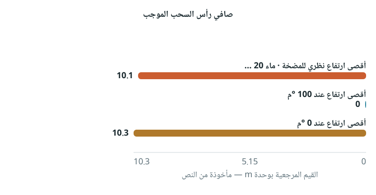

صافي رأس السحب الموجب
Net Positive Suction Head (NPSH)
الهامش بين الضغط المطلق عند مدخل المضخة وضغط بخار السائل، معبَّرًا عنه بارتفاع؛ مقياس خطر التكهّف.
صافي رأس السحب الموجب هو الفرق بين الطاقة المطلقة المتاحة للسائل عند مدخل المضخة والطاقة المقابلة لضغط بخاره عند حرارة التشغيل، ويُعبَّر عنه بالمتر. تُفرَّق منه كميّتان لا تُخلطان: المتاح NPSHa يحدّده النظام — ضغط السطح وارتفاع المنصوب وفقد الاحتكاك في خط السحب — والمطلوب NPSHr يحدّده المصنّع وهو أدنى هامش يحفظ الضغط عند المدخل أعلى من ضغط البخار داخل المضخة. شرط التشغيل الآمن NPSHa > NPSHr بهامش أمان، وانقلاب الشرط يعني تكهّفًا: تكوّن جيوب بخارية عند أدنى ضغط في المضخة ثم انهيارها على سطح الريشة أو غلافها، فيتآكل المعدن وتنخفض القدرة والرأس ويهتزّ الجهاز ويعلو صوته. والمعادلة الأساسية NPSHa = p_atm/γ − h_e − h_l − p_v/γ، وفيها h_e ارتفاع مدخل المضخة فوق سطح السائل وh_l الفقد في خط السحب. من هذا يتبيّن أن أشدّ عاملين على الهامش هما حرارة السائل (ترفع p_v) وطول خط السحب بفقدِه، وأن رفع المضخة درجة واحدة قد يمحو هامشًا كاملًا. وفي الماء تكون p_v صغيرة عند الحرارة العادية فتكبر المسافة المتاحة، وتتضخّم بسرعة مع الحرارة حتى تنعدم عند الغليان.
كيف تعمل الظاهرة؟
داخل المضخة ينخفض الضغط عند مدخل الريشة بسبب تسارع السائل حول الحافة، فأدنى نقطة ضغط ليست عند فتحة السحب بل على سطح الريشة نفسها، ولهذا يُطلب هامش فوق ضغط البخار لا مساواته. وحين يصل الضغط الموضعي إلى p_v يتكوّن جيب بخاري يكبر حتى يخرج إلى منطقة ضغط أعلى فينهار فجأة مولّدًا موجة صدمة صغيرة جدًّا في الحجم وعالية جدًّا في الضغط؛ وتكرار الانهيار على المعدن يُحدث إجهادًا دوريًّا يقشّر الطبقة السطحية ويُسمّى تآكل التكهّف. ومع الوقت يتغيّر شكل الريشة فيتغيّر منحنى المضخة نفسه، ولهذا يفسّر التكهّف المزمن انخفاض الأداء التدريجي لا المفاجئ فقط.
العلاقة بالأرقام
الأرقام المرجعية للماء: p_v = 0.6 kN/m² عند 0 °م و2.3 عند 20 و12.5 عند 50 و47.5 عند 80 و101.33 عند 100. وبالضغط الجوي القياسي γ = 9.80 kN/m³ يعطي ذلك أقصى ارتفاع نظري 10.3 m عند 0 °م و10.1 عند 20 و9.1 عند 50 و5.5 عند 80 وصفرًا عند 100. فالهامش يتقلّص 46% بين 20 °م و80 °م. ومن المعادلة NPSHa = p_atm/γ − h_e − h_l − p_v/γ يظهر أن كل متر من فقد خط السحب يُخصم مباشرة من الهامش، وكل متر رفع للمضخة يُخصم كذلك؛ ومن هنا القاعدة العملية: قصّر خط السحب وكبّر قطره بدلًا من رفع المضخة.
مفاهيم متقاربة
الخطأ الشائع الأول: قراءة NPSHr من المنحنى عند التدفّق التصميمي ثم تشغيل المضخة عند تدفّق أعلى — وNPSHr يرتفع مع التدفّق فتنقلب المعادلة بلا تغيير في الشبكة. الثاني: حساب NPSHa على الماء البارد وتشغيل النظام بماء ساخن. الثالث: إهمال الفقد في المصافي والصمامات على خط السحب، وهو فقد يتضاعف بالاتساخ. الرابع: الظنّ بأن NPSHa يُقاس بضغط المدخل مباشرة؛ الضغط عند المدخل يقيس الضغط الساكن ولا يقيس الهامش حتى يُطرح p_v ويُضاف حدّ السرعة. والخامس: التعامل مع الرقم كأنه خاصية سائل، وهو خاصية نظام عند حرارة معيّنة.
حدود التطبيق
الأول: المعادلة المبسّطة تهمل حدّ السرعة v²/2g، وهو صغير عادةً لكنه ليس مهملًا عند التدفقات العالية والأنابيب الضيقة. الثاني: في السوائل اللزجة والحبيبية تُصحَّح الأرقام بلزوجة تختلف عن الماء، وNPSHr المعلن للماء لا يصلح لها مباشرة. الثالث: الغازات الذائبة تطلق عند انخفاض الضغط قبل بلوغ p_v فتُسرّع التكهّف حتى مع هامش موجب نظريًّا. الرابع: هامش أمان 0.5–1 m الشائع ليس قاعدة عامة؛ يزيد مع الحرارة العالية والسوائل المتطايرة والحمل المتغيّر. الخامس: NPSH لا يوصف التكهّف في التوربينات والريش المتحرّكة حيث يلزم معيار انخفاض ضغط موضعي على السطح، لا هامش عند المدخل.

| الكمية | القيمة | المصدر |
|---|---|---|
| أقصى ارتفاع نظري للمضخة · ماء 20 °م | 10.1 m | [1] |
| ضغط بخار الماء عند 50 °م | 12.5 kN/m² | [1] |
| ضغط بخار الماء عند 80 °م | 47.5 kN/m² | [1] |
| أقصى ارتفاع عند 100 °م | 0 m | [1] |
| أقصى ارتفاع عند 0 °م | 10.3 m | [1] |
المصادر
- 1 Pumps - NPSH (Net Positive Suction Head) — The Engineering ToolBox. www.engineeringtoolbox.com/npsh-net-positive-suction-head-d_634.html · اطُّلع عليه 2026-11-28
- 2 Cavitation — Wikipedia. en.wikipedia.org/wiki/Cavitation · اطُّلع عليه 2026-11-28
استشهد بهذا المصطلح
الصيغتان مبنيتان من بيانات الصفحة نفسها: العنوان والتاريخ ورابط النسخة المنشورة.
صافي رأس السحب الموجب — Net Positive Suction Head (NPSH). (2026). ديوان المعرفة — انفراد. https://infiradev.com/diwan/terms/term-npsh.html
@misc{term-npsh2026,
title = {صافي رأس السحب الموجب},
titleaddon = {Net Positive Suction Head (NPSH)},
howpublished = {{ديوان المعرفة — انفراد} — مرجع علمي عربي},
year = {2026},
url = {https://infiradev.com/diwan/terms/term-npsh.html},
urldate = {2026-11-28},
note = {مراجعة علمية: Abdullah Al-Huwaidi}
}
راجعه: Abdullah Al-Huwaidi · 2026-11-28 · آخر تحديث 2026-11-28